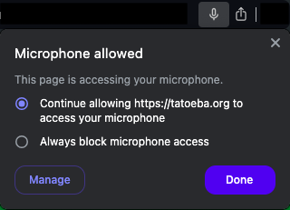

Setup
-
Make sure your microphone permissions are on for this site.

-
Search for a word or phrase in your target language on
Tatoeba.
-
Click and hold the record button while you speak the
sentence.*
-
Once you release the button, your audio will be played back
to you, followed by the native audio.
-
Repeat until your pronunciation gets as close the native
speaker's as possible!
Tips
-
For optimal performance, make sure "Has Audio" for the
"Sentence" is set to "Yes" in the right-side search menu.
- Don't forget to update the search results!
*Your audio data is NOT saved. It is deleted as soon as
playback completes.